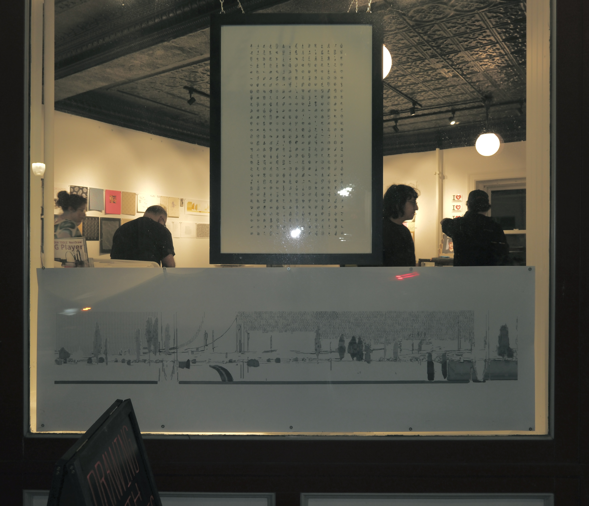

This semester I made ten 10-hour road trips: Pittsburgh to Michigan, Michigan to Chicago, back again. A dashcam ran the whole time. I left it on through a towing incident, two snowstorms, a swerve on I-76. The footage accumulated.
For Golan Levin's Drawing with Machines studio I wanted to make a record of that driving — not documentary, not navigation data, but the physical fact of it. I extracted slit scans from the footage using ffmpeg (one column per frame, concatenated across time), applied SAM segmentation to isolate moving elements, and generated SVG files with halftone hatching via vsketch and vpype. The SVGs were then plotted on an HP Draftmaster and a USCutter MH871 using watercolor pens, Posca markers, and Micron pens.
Yupo paper with watercolor proved most effective: the synthetic surface takes pigment differently than paper, and the plotter's consistent pressure produces a quality of mark I couldn't replicate by hand. The images look like damaged signal or compressed memory — which is approximately what they are.
- course
- Drawing with Machines, Prof. Golan Levin, Carnegie Mellon University
- tools
- Python, SAM, ffmpeg, vsketch, vpype, HP Draftmaster, USCutter MH871-MK2
- materials
- Watercolor pens, Posca markers, Micron pens · Yupo paper, primed canvas
- related work
- dashcam explorations
- links
- substack writeup →


